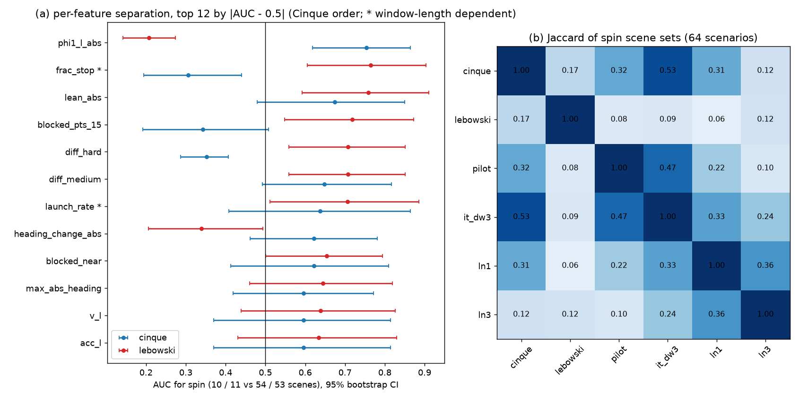
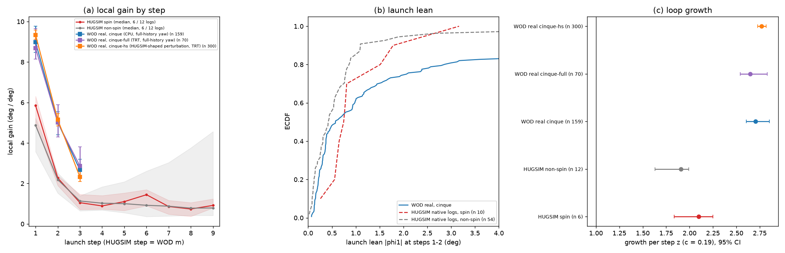
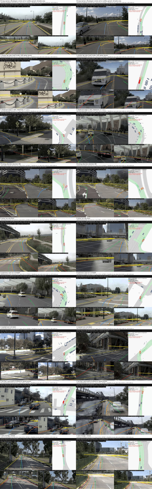
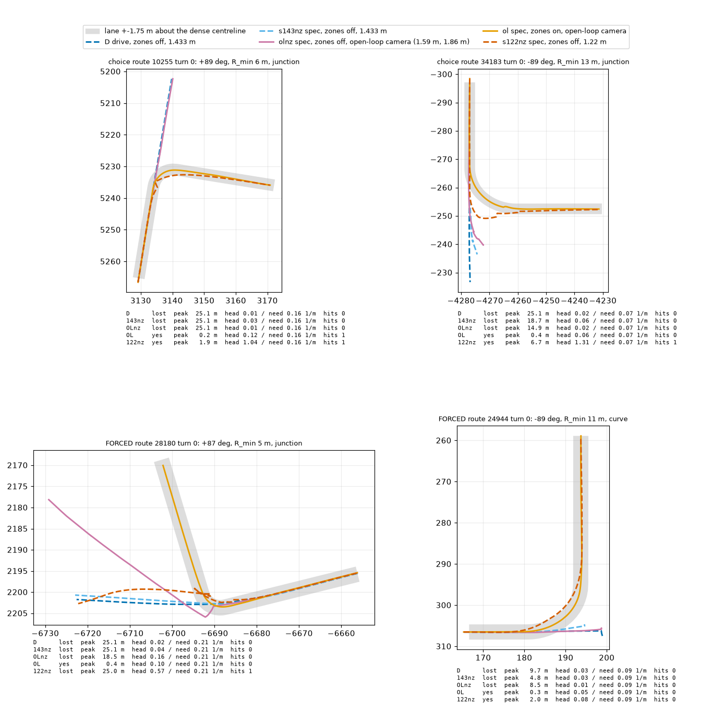
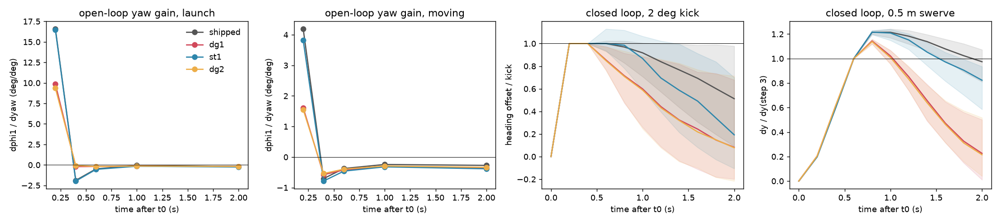

spec_plan_smooth 平滑转换与闭环验证（决策 149、150）。学术界端到端自动驾驶（E2E-AD）通常假定每个基准榜单需单独从头设计策略或端到端微调，各榜高分模型难以直接互换。本论文以开源商业量产系统 openpilot（Cinque 架构）为研究对象，系统性回答：学术榜单的高分究竟是真实的泛化驾驶能力，还是各榜特定的接口技巧与人工修补？
论文由三大部分构成：
spec）下，冻结主干表征、仅微调输入对齐与策略头（P2 / P2H），能够以极低训练代价补齐真实场景缺口，且具备跨榜一致性，无需针对单榜设计启发式规则。主张（Claim 1）：同一个未微调的出厂 openpilot Cinque，在五个基准上的「正常 / 失常」并不反映底层感知规划能力的有无，而是由评测基准的接口设计决定：执行层通道、起步机制、相机视角几何、评分器多边形边界与路线特权等级。
系统梳理各榜接入规范（数据源：docs/openpilot-interface.md、jevdrive/openpilot/interface.py 台账）。
| 基准榜单 | 执行层通道（Execution） | 起步机制（Launch） | 相机视角与几何 | 导航与路线输入 | 红绿灯处理 | 评分规则与特权等级 |
|---|---|---|---|---|---|---|
| WOD-E2E | 开环回放（无闭环执行器） | 真实运动日志 | CAM_F 离地约 1.81 m（原点推断约 1.86 m，z=1.8065 m；模型内参） | 无地图（纯自车历史） | 无判罚 | 轨迹位移误差（真车等价，开环） |
| NAVSIM (navtest) | 官方 LQR + 自行车模型回放 | 真实运动日志 | CAM_F0 1.87 m（模型内参） | 无地图（仅自车历史） | 无判罚 | EPDMS（真车等价，开环） |
| NAVSIM (navhard) | 官方 LQR（滞后约 21%） | 第一阶段真帧 / 第二阶段挪偏起点 | CAM_F0 1.87 m（高度致缩尺 0.7） | 无地图 | 无判罚 | DAC 评分多边形过窄，半特权偏差 |
| HUGSIM (64 场景) | 早期 exam: iLQR 跟踪 plan 位置； spec: 车端 action 曲率 + 延迟 | 早期无预热（起不来）； spec: 5 s 静止预热 + dilate | 多传感器混合（1.2–1.8 m） | 无导航指令（直道+弯道混合） | 无判罚 | HD 进度与碰撞率（exam 误判，spec 合格） |
| Bench2Drive (B2D) | 早期 drive: 裸 curv + 稠密路线接管； spec: action 曲率 + 延迟 | timer resume + coast_v 2.5 调度 | 早期 1.433 m； spec: 1.86 m 对齐开环 | 半特权：路口内稠密路线（A 臂）vs 榜原生 50 m 稀疏点（B 臂） | 真值判罚（需外挂 VLM / 规则） | DS 驾驶分数（半特权路线注入严重） |
关键证据（决策 104、108）： NAVSIM CAM_F0 离地 1.87 m（openpilot 标定高度约 1.22 m），导致车道宽读数为地图的 0.67–0.70，产生缩尺现象（决策 104）。然而跨榜审计发现，WOD-E2E 相机同样离地约 1.86 m（z=1.8065 m 为原点推断，docs 记 1.81 m），模型路面 z 值在两者上完全一致（NAVSIM 1.343 [1.339, 1.348] vs WOD-E2E 1.343 [1.328, 1.351]），直路上远处路面均落在名义行附近（road 约 10 px、wide 约 3 px），广角 58.7° 张角一致（决策 108）。openpilot 在 WOD 表现优异（RFS 8.005），排除相机高度尺度是导致闭环失常的核心原因；决策 108 确立异常榜单的共同点是合成画面（3DGS / CARLA 渲染）加闭环或伪闭环。
关键证据（决策 110、111、118、124）： 出厂 openpilot 在 HUGSIM exam 预设下 64 场景打转 10 次。归因分析证明：
op-path）后，开环回放合并等效 c 降至 0.013 [0.001, 0.024]（iLQR 为 0.127），闭环实测 c 为 0.033 / 0.066 / 0.146（约 iLQR 的一半），HUGSIM 打转由 10/64 彻底降为 0/64；但非打转 HD −0.009 [−0.058, +0.042] 未过「不伤」线，代价来自停车计划卡死（决策 118、124）。

关键证据（决策 103、112、147）： 出厂模型在 navhard 上的核心丢分项为可行驶区（DAC 丢失 13 分）。深入归因表明：

关键证据（决策 120、121、127）： B2D 基准模型普遍依赖路口内稠密路径或 50 m 目标点导航。实测显示：

试图通过在策略外部堆叠启发式后处理规则来迎合榜单指标，均在严谨验证下被否定（数据源：决策 094、097、105、113、114、117）。
| 规则方案 | 作用机制与目标 | 实测表现与核心读数 | 否定裁决与机制归因 |
|---|---|---|---|
| 全量去历史转动（决策 094） | 抑制历史外推导致的偏航抖动 | navtest 骤降 −8 分；仅在事后按不确定度筛选时伪提升 | 否决：直接破坏正常弯道的历史感知延续性。 |
| 跟踪器滞后预补偿（决策 097） | 补偿 NAVSIM LQR 滞后以提高 DAC | 计划被精确跟踪后，真实场景表现反而全面恶化 | 否决：跟踪器滞后本质上是有益的低通平滑，强行补偿放大高频扰动。 |
| 非特权 Bypass 避障规则（决策 105） | 规则放行绕行以提升 B2D DS | 障碍路线 +12.9（未达目标 +20.7 线，未通过），保守 gap 规则在密集车流很少放行；碰撞回到 drive 水平（0.158，通过碰撞线） | 待定（弱）：单靠 gap 旋钮无法兼顾增益与安全（放宽 gap 侧撞反弹），规则难解交互博弈，待高阶表征或侧向感知。 |
| 控制器低速低通滤波（决策 113） | 滤除起步瞬时偏航以消除 HUGSIM 打转 | 打转 10 → 1，但非打转 HD −0.028 掉分；B2D 补跑 DS −4.11（无打转可压、净损耗） | 否决：钝化车辆响应，转弯场景无法及时转向。 |
| 低速死区截断（2°–4°）（决策 114） | 强制忽略小偏航角 | HD 不伤，但打转仅 10 → 6；剩余场景在 1–3 步内迅速突破 4° 死区阈值 | 否决：发散过程跨过阈值速度极快，死区无法阻断正反馈。 |
| 纵向起步对齐真车剖面（决策 117） | 缩短低速逗留时间以规避打转 | 低于 3 m/s 时间由 6.4 s 缩短至 3.9 s，但打转仍达 11 次（基线 10 次） | 否决：「真车逗留短故不打转」假说在闭环中不成立，环路核心在横向。 |
主张（Claim 2）：基于量产出厂模型（shipped），保持工业大规模预训练的主干视觉编码器冻结，仅放开输入接口通道与轻量末端策略头进行统一微调，即可在各榜共同护栏集下补足真实能力短板，不依赖针对特定榜单的特权作弊或手工规则。
| 能力缺口维度 | 问题现象与基准表现 | 根因定位与定性结论 | 对应微调/架构修复方案 | 证据决策 |
|---|---|---|---|---|
| 路口选路（Choice） | B2D 25 路口 choice 走对 0/13；原车 turn desire 开着仍直行 | 车道保持先验阻碍转向；模型未见过折线导航目标 | 增加折线导航指令通路（op_route_cmd）或图像级路口条件 | 决策 121、127、128 |
| 急弯幅度（Sharp Turn） | HUGSIM 入弯过快（9.8 对 2.7 m/s）；navtest 54% 切内角、26% 欠转 | comma1M 真车增益为 0.65；rc-* 目标缩半；入弯减速缺少视觉预判 | 瞬时曲率目标重标定（决策 130）+ 可行驶区 SDF hinge 约束 | 决策 122、130、148、153 |
| 起步与自停（Launch） | 仿真中静止状态频发幽灵停车（HUGSIM 停滞 24 场景）；起步失败 | 停车时间的 70–90% 是模型自身 plan 要停（决策 119、128 第 7 点；停的理由不全在输出里，决策 140） | 显式自车运动输入（ego warp 对齐）使卡死清零（24 → 0） | 决策 119、124、128、140、142、144 |
| 借道与绕障（Bypass） | B2D 遇障碍车停死；简单规则放宽导致侧面碰撞率反弹 | 端到端轻量 head 无法稳定建模多车博弈与对向车流缝隙 | 定性为架构外能力，声明外挂 Qwen3-VL 仲裁模块负责放行 | 决策 084–086、105 |
展示轻度微调在多榜通用护栏指标上的表现（EPDMS、RFS、HD、DS 综合矩阵）。
| 模型版本 | 训练与配置策略 | navtest (EPDMS) | navhard (综合 EPDMS) | HUGSIM 64 (HD×100) | WOD val (RFS) | B2D 走对率 |
|---|---|---|---|---|---|---|
| 出厂 shipped (P0) | 工业原始权重，无学术榜适配 | 80.51 | 33.54 | 29.4 (spec) / 26.3 (exam) | 8.005 | 1/25 (4%，1.86 m 对齐相机；旧 1.433 m 为 2/38，决策 121、127) |
| P2 (输入对齐) | ego 历史对齐 + warp 预处理 | 88.21 | 30.34 | 39.3 (spec) / 39.6 (exam) | — | 4–7/25 (1.86 m rc 臂，决策 128) |
| P2H (基线+SDF hinge) | P2 + 可行驶区足迹铰链约束 | 88.67 [88.58, 88.77] | 31.84 [31.40, 32.28] | 43.2 (spec)（smooth 4 臂均值 42.8，直道 48.2） | 7.708 (中性，受输入偏差影响) | — |
| WA-JEPA (开源 SOTA) | nuPlan+V-JEPA 2 全量微调 | 91.71 | 35.41 | 45.1 (直道 45.6) | — | — |
| 逐榜最优技巧臂 | 包含特权路线/人工选择器等（it_dw3 + 选择器，决策 101） | 84.70 | 35.76 | 34.5 | 8.005 | 20/25 (80%，1.86 m 稠密路线；旧 1.433 m 为 35/38，决策 121、127) |
| 合并微调版 (Merged P2H-A) | 统一输入 + 导航指令 + 共同护栏 | 待填（任务 A） | 待填（任务 A） | 待填（任务 A） | 待填（任务 A） | 待填（任务 A） |
关键证据（决策 127、128、129、134）： 在 1.86 m 对齐相机下出厂基线走对 1/25（choice 0/13、forced 1/12，决策 127）。路线微调 4 臂将走对率提升至 4–7/25（决策 128），但增益来自微调本身（rc-bear − rc-ctl 为 −0.08 [−0.28, +0.15]），adapter 选路信号无额外贡献；开环指令学习虽达成高相关（corr 0.96），但闭环中提前转向时机与低速状态严重失配（开环训练在 ≥4 m/s，闭环实际入弯仅 1–3 m/s，决策 128、129）。该方向已有闭环结果为负或零增益：决策 129 入弯前提前转向监督闭环仅 0/25 与 1/25；决策 134 近距离低速样本闭环仅 0/9。
考察目标：输入通道对齐、SDF hinge、急弯加权、折线导航指令等目标之间是否存在负向冲突（如决策 154 中全量转弯训练加权导致直道付出代价；决策 155 中 P2H 在 WOD 上的自车状态偏差）。
关键证据（决策 101、107）：
展示「逐榜调参」为何不是真正的自动驾驶泛化。在 NAVSIM 上针对渲染跳变设计的 it_dw3 + 选择器 组合臂，曾取得 navhard +2.43、navtest +0.52 的成绩（决策 101）；然而原样部署到其他基准时，在 Bench2Drive 闭环上 it_dw3 + 选择器 出现断崖式掉分（DS 显著下降 −5.18 [−10.20, −0.46]；it_dw3 单独掉 −3.34 [−7.74, +0.47] 在噪声内，决策 107），在真实开环 WOD 上表现完全中性（−0.026 n.s.）。证明迎合单个基准渲染缺陷的小技巧具有负迁移风险，必须坚持规范的通用接口。
核心设想：闭环特有的交互问题（起步正反馈、偏离修回、低速控制发散）无法仅凭开环离线日志解决，必须在模型自身 rollout 轨迹上进行自反事实训练（类 DAgger 范式）。然而，生成式世界模型是否已具备充当端到端策略训练场的能力？
关键证据（决策 123）： 在 WOD 真实数据 10 个片段 15 个 anchor（起步 6、巡航 3、弯道 1、自然偏离 5，无预登记）上对比平面几何重投影（R）与 CARLA 训练的 WL-2 世界模型（W）：

关键证据（决策 132）： 利用几何重投影构建 1–2 s 偏离扰动环境，进行首轮 DAgger 式闭环微调：

关键证据（决策 139、141、143、146）： 探索生成式世界模型与 on-policy 闭环训练场：
为确保学术诚信与结论严谨，论文必须在正文中完整披露以下局限与未解问题：
| 论文图表编号 | 核心论述主张 | 对应支撑决策（Decisions） | 支撑数据与图表文件路径 | 当前证据状态 |
|---|---|---|---|---|
| 表 1 | 五个基准榜单 × 接口组件与信息特权等级 | 台账、docs/openpilot-interface.md | jevdrive/openpilot/interface.py | 已具备 |
| 图 1 | 同一模型在各榜的模型视角（地平线/视场/尺度，异常榜共性为合成画面加闭环） | 决策 104、108 | figs/fig1_board_views.png | 尺度一致性结论，拆分待定（弱） |
| 图 2 | HUGSIM 打转：跟踪 plan vs action，换执行层 10→0（非打转未过不伤线） | 决策 110、111、118、124 | figs/fig2_spin_attribution.png、figs/fig2_wod_launch_gain.png | 待定（中） |
| 图 3 | navhard DAC 失败拆分：评分器侧缺陷约占一半（M 类目测受限） | 决策 103、112、147 | figs/fig3_navhard_dac_review.jpg | 待定（中） |
| 图 4 | B2D 路口：稠密路线接管（1.86 m 下 20/25，1.433 m 下 35/38）vs openpilot 自主 action（1.86 m choice 0/13、forced 1/12；旧 1.433 m 下 2/38） | 决策 120、121、127 | figs/fig4_junction_panels.png | d121 强，d127 待定（中） |
| 表 2 | 人工规则修补全部不过线（低通/死区/选择器/预补偿/bypass） | 决策 094、097、105、113、114、117 | 各决策记录表与离线回放日志 | 负结果清单待定（弱/中） |
| 表 3 | 能力缺口清单（选路/急弯/起步/借道）与定位 | 决策 119、121、122、127、128、130、140、142、144、148、153 | 诊断实验报告与参数对齐记录 | 待定（弱/中） |
| 表 4 | 合并版本 vs shipped vs 最优技巧臂跨榜护栏对比 | 决策 101、144、148、任务 A | op_guard 跨榜全量汇总表 | 部分具备（待任务 A 全量） |
| 图 5 | 路口选路微调对比与入弯时机（闭环结果已具备且为负/零增益） | 决策 127、128、129、134 | experiments/op_route_ft/results/ | 待定（中偏弱，已有闭环为负/零增益） |
| 图 6 | 训练目标留一消融与冲突矩阵 | 决策 144、148、150、154、155 | 多目标联合消融实验 | 缺失（待 A 之后） |
| 表 5 | 跨榜不迁移反例：it_dw3 + 选择器在 B2D 掉分 −5.18（it_dw3 单独 −3.34 噪声内） | 决策 101、107 | experiments/op_adapt_h/results/one_driver.md | 待定（弱） |
| 图 7 | 几何重投影 vs 世界模型偏航增益（低估 5 倍，但重投影起步急弯失真） | 决策 123 | figs/fig7_wm_vs_reproj_gain.png | 待定（中偏弱） |
| 图 8 | 重投影 rollout 上的 DAgger 微调 pilot 读数（修回改善但伴随抖动过校正） | 决策 132 | figs/fig8_dagger_pilot.png | 待定（中偏弱，pilot） |
| 图 9 | 真实数据世界模型在起步/急弯胜过重投影（假说检验，G 未定） | 决策 139、141、143、146 | factor_wm 闸门停机日志 | 缺失（G 未定，待定） |
research/decisions/094.md（历史对齐）、
research/decisions/097.md（跟踪器滞后）、
research/decisions/101.md（一个 driver 与选择器）、
research/decisions/104.md（相机高度与尺度）、
research/decisions/105.md（B2D bypass 规则）、
research/decisions/107.md（选择器 B2D 掉分）、
research/decisions/108.md（WOD 尺度一致与合成画面）、
research/decisions/110.md（HUGSIM 打转归因）、
research/decisions/111.md（WOD 真实起步增益与控制器 c）、
research/decisions/112.md（navhard DAC 归因与地图缺陷）、
research/decisions/113.md（控制器低通滤波）、
research/decisions/114.md（死区规则）、
research/decisions/117.md（纵向加速剖面）、
research/decisions/118.md（车端 action 横向路径打转清零）、
research/decisions/119.md（纵向 action 卡死与停车意图）、
research/decisions/121.md（B2D 闭环自主转向仅 2/38）、
research/decisions/123.md（重投影与世界模型 WL-2）、
research/decisions/124.md（HUGSIM spec 统一接口）、
research/decisions/127.md（对齐相机 B2D choice 0/13）、
research/decisions/128.md（路线微调 4 臂与停车 plan）、
research/decisions/129.md（入弯前提前转向监督）、
research/decisions/130.md（action 目标误差解析）、
research/decisions/132.md（重投影 DAgger pilot）、
research/decisions/133.md（B2D plan 跟踪 20 秒失控）、
research/decisions/134.md（近距离低速 CARLA 样本）、
research/decisions/139.md（worldmodel-4B 无法作为策略）、
research/decisions/140.md（启停规则与模型停的理由）、
research/decisions/141.md（factor_wm G0 扰动评测）、
research/decisions/143.md（factor_wm G1 评测与标签 bug）、
research/decisions/144.md（输入对齐全量微调）、
research/decisions/146.md（factor_wm on-policy P2 起步闸门停）、
research/decisions/148.md（SDF hinge 铰链约束）、
research/decisions/149.md（HUGSIM 平滑规划）、
research/decisions/153.md（四个方向诊断）。
experiments/leaderboard_audit/（榜单接口与视角审计）、
experiments/op_adapt_h/（it_dw3 与跨榜适配）、
experiments/op_route_cmd/（折线导航指令通路与数据集）、
experiments/op_closed_loop/（B2D 闭环路口诊断）、
experiments/hugsim/（HUGSIM 闭环打转与起步分析）、
experiments/op_route_ft/（路线选路与入弯微调）、
experiments/op_parity/（输入对齐与 P2/P2H 训练）、
experiments/world_model/（世界模型与重投影对比）、
experiments/op_dagger/（重投影扰动与修回微调）。
jevdrive/openpilot/interface.py（DECLARED、PRIVILEGE、B2D_MOUNTS）、
docs/openpilot-interface.md（统一接入规范说明）。
$DATA_DIR/runs/unified/{b2d,hugsim}、
$DATA_DIR/runs/op_dagger、
$DATA_DIR/runs/op_parity。